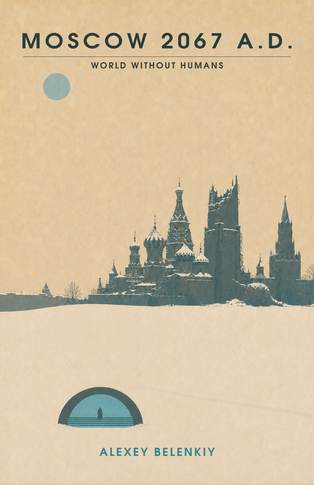
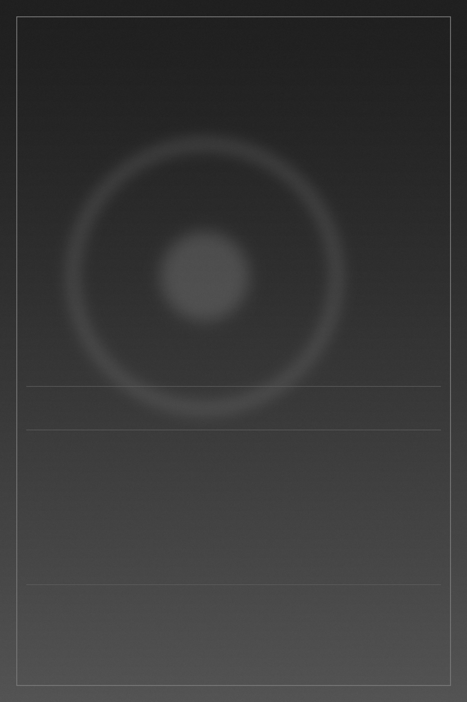
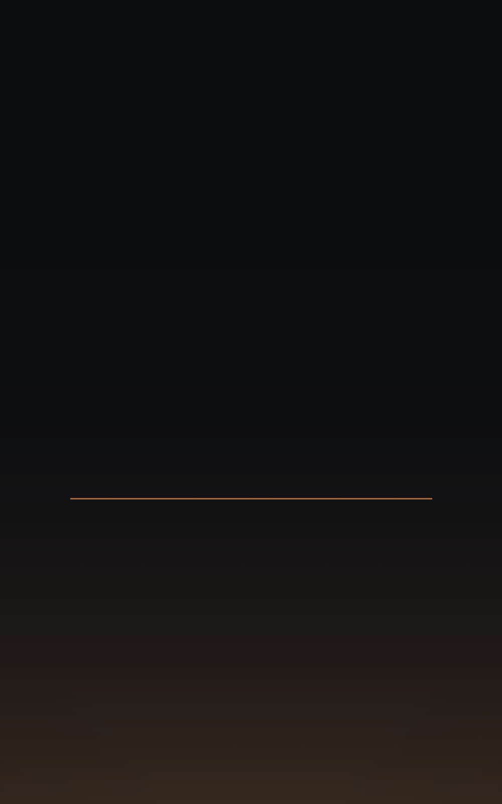
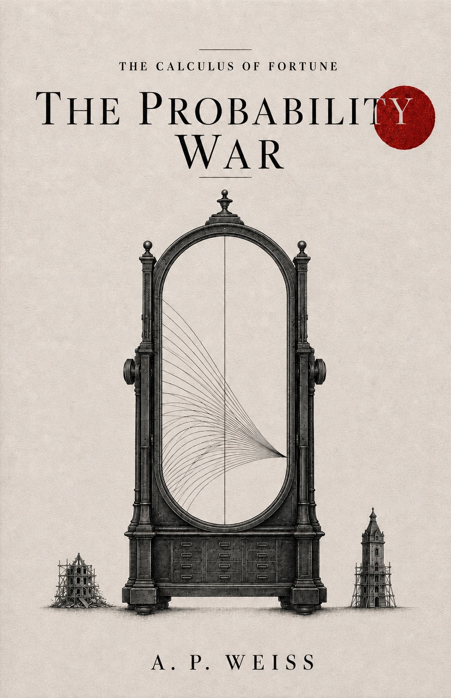
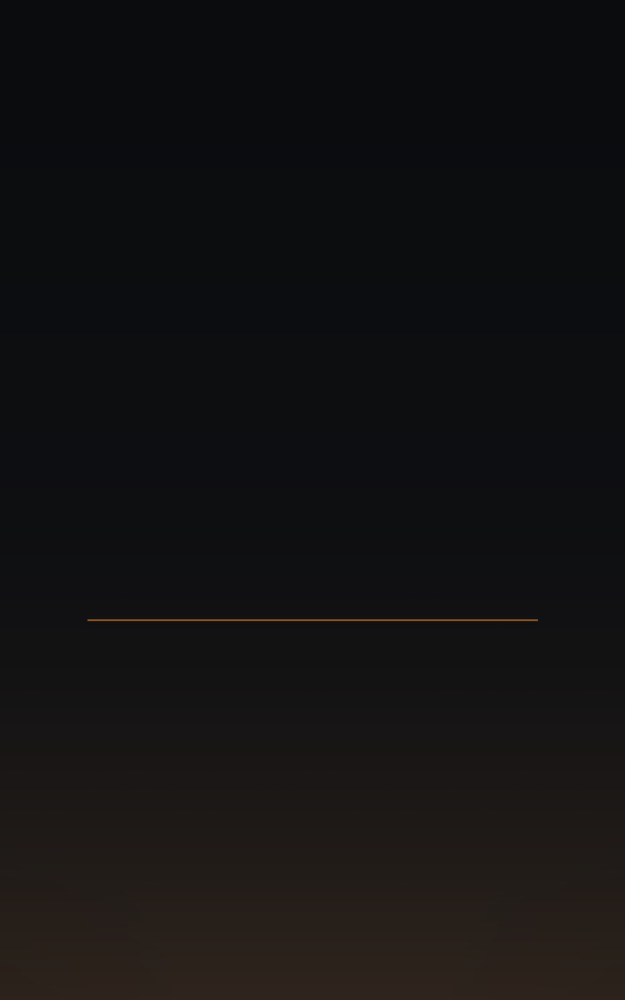

Venice 2068 A.D.
Gebaut, um eine ertrunkene Stadt zu katalogisieren — nicht, um sich zu verlieben.
Orb & Ink · Science-Fiction-Bücher
43 Bücher in 12 Welten — zum Lesen, Hören und Sehen.
Gebaut, um eine ertrunkene Stadt zu katalogisieren — nicht, um sich zu verlieben.

Die Menschen sind fort. Die Stadt hat eine Spur aus Hinweisen bewahrt.

Was darf ein Gelehrter aus einem Grab nehmen, wenn das Grab es ihm reicht?

Die Stadt ist tot. Die Züge fahren noch immer pünktlich.

Um die letzte Waffe zu laden, gewinne zuerst die Zustimmung der Toten.

Zum ersten Mal kam er an, bevor die Welt endete.

Ein Paradies, das nachwächst. Ein Rückrufbefehl. Ein Zeuge, der zu wollen begonnen hat.

Das letzte Journal reist am frühesten von allen.

Sie stuften sie auf vier Zehntel ein und legten sie beiseite. Es war ihr erster Fehler.

Jedes Wunder hat eine Rechnung. Sie zwingt den Hof hinzusehen, wer zahlt.

Jede Ader am Himmel endet irgendwo. Was schuldet man einem hungernden Gott?

Der Erstkontakt ist ein Rückrufbescheid. Die Menschheit hat neunzig Tage, um Widerspruch einzulegen.

Vierundvierzig hergestellte Zivilisationen. Eine Klägergruppe. Ein toter Beklagter.

Eine Klausel befreit die Galaxis. Niemand fragt, was sie sonst noch erlöschen lässt.

Im Verge hat Grausamkeit Masse. Ein Mord lässt ein Haus versinken. Und jemand lässt eine Stadt versinken.

Der Rest einer toten Welt ist drei Jahre entfernt. Die Gesellschaft, die nicht schaden kann, muss entscheiden, wer ein Ungeheuer sein darf.

Der gütigste Mensch der Welt baut an der schlimmsten Nacht der Geschichte.

Die Sterne erlöschen. Keine Explosionen. Keine Überreste. Irgendjemand muss hinfahren und nachsehen.

Das Universum hat aufgehört, sich auszudehnen. Die letzte Expedition steht der Antwort im Weg.

Jeder verschwundene Stern zeigte auf denselben Ort. Die letzten Menschen sind der Karte gefolgt.

Nichts in den Zonen geschieht zufällig. Die Elendsviertel laufen mit dem Unglück, das dafür bürgt.

Die Elendsviertel haben gelernt, das Unglück an seine Unterzeichner zurückzuschicken.

Ursache und Wirkung sind keine Kollegen mehr. Drei Wege, die Welt neu zu manipulieren, und jeder kostet ein Kind.

Die großen Häuser sterben nicht. Sie sinken — und beherrschen die Oberfläche aus Jahrhunderten Tiefe.

Die Tiefe hat begonnen, Briefe zu beantworten. Jede Antwort weiß Dinge, die nur die Toten wussten.

Zwei Mieter pro Körper. Tage und Nächte, am Riegel übergeben. Dem anderen begegnen Sie nie.

Sie haben den Tag gelesen. Lesen Sie nun dieselben Wochen bei Nacht.

Die Übergabe blutet. Jemand taucht auf, der überhaupt keinen Mietvertrag hat.

Auf Barrow ist Kaste eine Höhe. Dann findet ein tiefgeborener Ingenieur den Stein, der die Physik verhandelbar macht.

Sie wurde angeheuert, um einen einzigen schwarzen Würfel zu stehlen. Jetzt erlischt das Licht überall dort, wo sie innehält.

Am Ende des Sternenlichts ist die Regel einfach: alles verzeichnen, nichts berühren — und wenn es um einen Leser bittet, sich weigern.

Die Vespern sind gekommen, um das Zeitalter in den Schlaf zu singen — tausend Jahre zu früh.

Das Meer fällt — eine Handspanne im Jahr, dann schneller. Jemand nimmt das Wasser.

Der Sonnenaufgang ist hier eine Feuerwand, die für immer um die Welt zieht. Leben gibt es nur in der marschierenden Nacht.

Neun Tage bei Hofe werden die Delegation drei Jahre des Krieges draußen kosten.

Alle Wachen sind zugleich wach, zum ersten Mal auf dieser Reise. Eine Belagerung ist ein geschlossenes Ventil. Eine Hungersnot ist eine Unterschrift.

Das Firmament reißt entlang der Naht — und über den Randbergen aller Reiche zugleich geht eine neue Galaxie auf.

Die Außerirdischen landeten bei einem verkrachten Diner und ernannten den Nachtkoch zum Botschafter der Menschheit. Ihre Zivilisation ist vollkommen. Sie hat eine Auslassung.

Er setzte die Erde auf eine neun Jahrhunderte alte Rebellion — ohne zu fragen, wogegen genau die Rebellen rebellieren.

Wer den Kritiker nicht beeindrucken kann, muss ihn dazu bringen, das Gericht zurückgehen zu lassen.

Entführt mitten in der Probefahrt. Hart verkaufen, täglich abschließen, oder planmäßig abgeschlossen werden.

Auf der Erde verkaufte er Schrottkarren. Jetzt bietet ein Imperium auf ihn.

Er hat die Beweise für die Invasion gefälscht. Jetzt sagt er die Wahrheit.
Nichts im Regal passt dazu. Filter zurücksetzen.
Schlag das Buch auf — die Welt ist darin.
Die Welten betreten